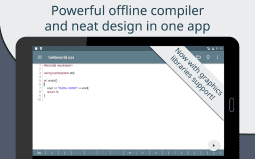
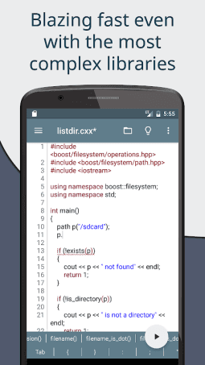

手机上写 C++ 真的能干活？Cxxdroid 三年用户的对比评测
Cxxdroid 是目前 Android 端功能最完整的 C/C++ 开发环境之一。本文从同类工具格局、差异化优势、取舍与选购三个维度，聊聊它到底适合谁。
把 C/C++ 编译器塞进手机这事，十年前没人当真——那玩意儿占空间、跑起来发热、屏幕又小。但近几年情况变了：Arm 性能追上来了，移动办公和碎片化学习成了常态，Termux 一类环境也验证了这条路走得通。于是 Android 端的 C/C++ 编译器开始分成两派：一派是 Termux + clang 这种「自己搭环境」的极客路线，另一派是把编辑器、编译器、构建系统、包管理器全打包好的「开箱即用」路线。Cxxdroid 就是后者里做的最完整的一个——也是我用了三年多、换了五六款类似工具之后留下来的那一个。
先给它定个位
同类工具里，Cxxdroid 不是唯一选择，但逛一圈Cxxdroid官网就会发现它做的事比别人多得多。C/C++ 领域本身就有 CppDroid、TutorialsPoint Coding Ground 等几款类似产品，还有一大票在线编辑器能临时跑一下代码。但真正做到「编译器 + 编辑器 + 构建系统 + 包管理器 + CMake 自动发现 + 桌面项目无缝迁移」这一套完整链路的，目前几乎只有它一款。其他工具要么只做了编辑器、编译器还得自己装；要么包管理器只支持个位数的库；要么用的是 GCC 而不是 Clang，错误输出可读性差一截。
我个人的使用场景主要是两类：一是在通勤路上刷算法题、写一段小逻辑验证一下想法；二是偶尔把桌面 IDE 里写了一半的 CMake 项目拷到手机上，躺床上继续改。这两件事对工具的要求天差地别——前者要的是「打开就能写、写完就能跑、输出一目了然」，后者要的是「项目结构兼容、第三方库能装上、构建脚本不用改」。Cxxdroid 是我试过的唯一一个在这两类场景里都不打折扣的。
三个别家做不到或没做好的点
Clang 错误信息的可读性
写 C/C++ 的人都知道，编译错误信息的质量直接决定了调 bug 的效率。GCC 的输出有时候真的像加密电报——一堆缩进和模板展开的层层嵌套，找到真正出错的位置得手动滚好几屏。Clang 不一样，它的错误格式是标准化的：文件名:行号:列号: error: 描述，下面还有一段代码片段，出错的那一行用波浪线标出来、出错的符号用 ^ 指上去。
Cxxdroid 把这个优势发挥到了极致：控制台面板里的每一条错误提示都是可点击的，点一下直接跳到对应的代码行。在手机上敲代码本来就比桌面慢，少一次手动滚动查找、多一次精确跳转，这种体验差异会在每天几十上百次编译里累积成明显的效率差。

CMake 内置 + 桌面项目兼容
这是 Cxxdroid 和同类工具拉开差距的核心差异。
先说它的项目模式：单文件、C 项目（Makefile）、C++ 项目（CMake），三种模式覆盖了从跟着教程写单段代码到完整多文件项目的全场景。真正的亮点在后两者上——C 项目自动生成 Makefile，C++ 项目自动生成 CMakeLists.txt，而且这个 CMakeLists.txt 不是 Cxxdroid 专用的、经过魔改的版本，是标准的、桌面 CLion / VS Code + CMake Tools / Visual Studio 几乎能直接用的版本。
我去年在 CLion 里写了个 SDL2 小游戏的原型，拷到手机上直接用 Cxxdroid 打开 CMakeLists.txt 就能编译运行，库的链接参数什么都不用改。反过来也成立：手机上写了一半的项目，拷回桌面 IDE 继续写，不会出现构建系统不兼容的问题。这种双向无缝在其他移动端 C/C++ 工具里基本是奢望。
另外它内置的包管理器装完库之后，CMake 会自动发现可用的库——Boost、SDL2 这类常见库的链接完全不用手动写 -l 参数，在 CMakeLists.txt 里正常 find_package(SDL2 REQUIRED) 就行。
编辑器和扩展键盘栏的取舍
移动端写 C/C++ 的痛点之一是键盘——需要频繁输入 { } ; #include <<iostream>> 这类符号，系统软键盘切起来很慢。Cxxdroid 的做法是在软键盘上方加一排可自定义的扩展键盘栏，放常用的 C++ 符号、编译运行按钮、格式化工具。这个设计很实用，但也带来了一个副作用：某些中文输入法的候选词栏会被扩展键盘栏挤到屏幕最上面看不见。

翻Cxxdroid文档就能找到专门排查这个问题的一节——关掉扩展键盘栏、自定义精简扩展栏按钮、或者横屏使用。这些方案都有效，但换个角度想：这说明 Cxxdroid 的编辑器团队确实把移动体验放在了优先位置，愿意为了键盘输入效率花精力做一个完整的扩展栏，而不是简单依赖系统键盘。
它为这些优势付出的代价
先说平台限制——只有 Android。iOS 上至今没有类似级别的 C/C++ 开发环境，苹果对 App Store 的沙盒限制是硬伤，走 Termux 路线也得用 TestFlight 或者自签名，麻烦程度不是一个量级。所以如果你主力设备是 iPhone，这篇文章可以直接关掉了。
然后是存储空间。应用本体 APK 约 72MB——不想装应用商店版本的话可以直接从官方下载拿，但首次启动会解压 Clang 和运行时组件，实际占用翻倍以上，加上编译器缓存和安装的第三方库，轻松跑到 500MB。内部存储得留够 200MB 以上才行。它支持把应用移到 SD 卡，但编译器核心组件和库文件还是留在内部存储的，SD 卡只能存项目文件。
免费版也有功能限制——Pastebin 分享、更多主题、一些高级设置在 Premium 付费版里。不过说实话，免费版的编译、编辑、CMake 项目管理、包管理器这些核心能力全都有，日常使用完全够了。Premium 更像是给重度用户的增值项。
还有一点是 Android 版本要求：最低 7.1，推荐 10 及以上。极旧的设备可能跑不起来。
选购结论
如果你想在手机上学 C/C++、刷算法、写小工具原型——Cxxdroid 是目前最好的选择，没有之一。它的 Clang 错误输出、CMake 兼容、包管理器自动发现这三个点，是其他同类工具要么没做、要么做不好的。哪怕你最终还是要回桌面 IDE 写完整项目，手机上用 Cxxdroid 做草稿和碎片时间的逻辑验证，也比等开机开 IDE 方便太多。
如果你是 iOS 用户、或者主力开发场景是桌面且偶尔才想在手机上看一眼代码——那没必要专门装，iPad 上可以考虑在线编辑器凑活一下。
关于整理出来的这些资料，我在 GitHub、Gitee、GitCode 各存了一份，换个平台也能查到。
最后提一句：它的系统要求不高，但 Arm64 是必须的（32 位 armeabi-v7a 支持有限），下载之前最好确认一下自己设备的 CPU 架构，省得装完解压编译器时才发现跑不起来。